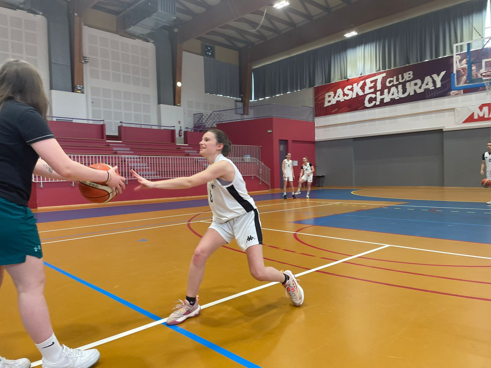

Pour en savoir plus sur moi !

Je pratique le basket-ball depuis l'âge de 6 ans au sein du Basket Club de Chauray (BCC). J'ai débuté à l'école de mini basket et aujourd'hui, je joue en tant que senior. J'ai évolué à un niveau régional et départemental tout au long de ces années. Je pratique ce sport à une fréquence d'environ 3h à 4h30 d'entraînements par semaine plus un ou deux matchs par week-end. En plus de cela, il m'arrive d'être arbitre et ou de devoir faire la table, c'est-à-dire être marqueuse ou chronométreuse. Pratiquer ce sport depuis que je suis petite m'a permis d'apprendre la rigueur et la persévérance. Il m'a aussi fait travailler la patience parce qu'on ne peut pas arriver à tout du premier coup ainsi que le fait de travailler en équipe parce que pour arriver à quelque chose on est plus fort à plusieurs et surtout lors de la pratique d'un sport collectif. De plus, le fait de faire de l'arbitrage, cela m'a permis en grandissant de prendre un peu plus confiance en moi et de prendre de l'assurance pour mes choix.
Je me considère comme quelqu'un de motivée et investie dans ce que j'entreprends. Que ce soit dans mes études, dans mes activités sportives ou dans mes expériences de job étudiant, j'aime m'impliquer sur la durée et apprendre de nouvelles choses. Ces expériences m'ont appris à m'adapter, à rester sérieuse et à garder le cap même quand il faut concilier plusieurs responsabilités en même temps.